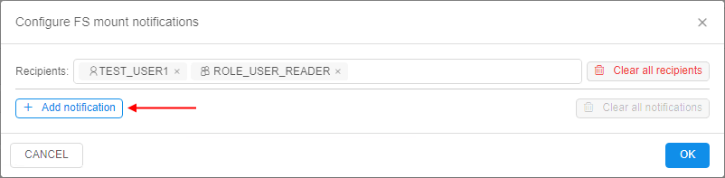

8.7. Create shared file system
User shall have ROLE_ADMIN to mount FS to the Cloud Pipeline. For more information see 13. Permissions.
A shared file system is a data storage based on network file system. It has several advantages over regular data storages and local file system:
- While regular data storage is a great option for a long-term storage, it cannot be used as a shared file system for high-performance computing jobs as it does not support network-like interface.
- A local disk cannot be shared across several nodes.
- A user needs to specify local disk size when scheduling a run. If a user specifies a size that is not enough to finish a job - it will fail. Cloud-based shared file system could be used to workaround this issue.
Create FS mount
- Navigate to a desired folder and click + Create → Storages → Create new FS mount.

Note: For FS mounts - "Add existing" option is not available.
Note: For the correct FS mount creation, at least one mount point shall be registered in the System Preferences for any Cloud Region. If no - the corresponding button of the FS mount creation becomes invisible:

- Specify Storage path and other optional parameters.

Note: Storage path parameter contains FS mount path and the name of the storage to be created.
Note: FS storages are just subdirectories of the mounted FS. One FS mount can have multiple FS storages. - When deleted from GUI, FS storage is unmounted from the Cloud Pipeline.
FS storage features
- For FS storages GUI doesn't display the following features typical for regular data storages:
- STS
- LTS
- Versioning and Backup duration.

- When a user selects Input/Common/Output path parameter for a pipeline run - it is impossible to set FS storage:
- FS storages aren't displayed in the "Browse..." dialog for Input/Common/Output path parameters;
- Value of Input/Common/Output path parameters is validated so that user is not able to specify a path to FS storage manually.
- The content of files stored in FS data storage could be previewed as well as in regular data storages:
- Since FS isn't an object data storage, it isn't possible to add metadata tags to files in the FS storage.
- Use FS storage between cluster nodes. If pipeline Tools contain FS client, FS storage(s) will be mounted automatically.
FS storage size
To know the summary size of all files in the FS storage - open its attributes:
In the Attributes panel, you can view the whole size:
Please note, in the Attributes panel here, the Effective size of all files in the FS storage is displayed.
To know the Real size of all files in the storage - click the info icon.
Details about Effective and Real sizes see in the section below.
FS storage content can be changed during the time, and the displayed size value in the Attributes panel may be outdated.
To know the actual FS storage size currently, you shall "re-index" the storage:
- For example, in the FS storage a new big file was added. But the displayed FS size is still previous:

- Click the Re-index button:

Storage size will be refreshed in a few minutes. You will see the corresponding message. - Couple minutes later refresh a page, and you can check that size is updated according to the added file:

FS quotas
There is a feature that allows to configure quota(s) to the FS storage volume that user can occupy.
On exceeding such quota(s), different actions can be applied, e.g. read-only mode for that storage.
This allows to minimize the shared filesystem costs by limiting the amount of data being stored in them and to notify the users/admins when FS storage is running out of the specific volume.
Setup the quota
To configure FS quotas, you need to have the ROLE_ADMIN role.
To setup a quota and actions on quota's exceeding:
- Open a FS storage.
- Click the Show attributes button to open the Attributes panel of the storage:

- Click the Configure notifications hyperlink to open the notifications/quota settings for the storage:

- The pop-up with quota settings will appear:
- Type the username(s) or a groupname(s) in the "Recipients" input to choose who will get the FS quota notifications via emails and push notifications, e.g.:


In the example above, one user and one group were selected. - Click the Add notification to configure rules/thresholds:

- Put a threshold in
Gbor%of the total volume and choose which action shall be performed when that threshold is reached.
The following actions can be taken by the platform:

- Send email - just notify the recipients that a quota has been reached (notification will be resent each hour)
- Disable mount - used to let the users cleanup the data:
- GUI will still allow to perform the modification of this storage (
read-writemode ) - In existing nodes (launched runs), FS storage mount will be switched to a
read-onlymode (if it was mounted previously) - This FS storage will be mounted in a
read-onlymode to the new launched compute nodes
- GUI will still allow to perform the modification of this storage (
- Make read-only - used to stop any data activities from the users, only admins can cleanup the data per a request:
- GUI will show this FS storage in a
read-onlymode - Existing nodes (launched runs) will turn this mounted FS storage in a
read-onlymode as well - This FS storage will be mounted in a
read-onlymode to the new launched compute nodes
- GUI will show this FS storage in a
- You may add any count of quota rules by the described way. The notification/quota rules can be combined in any form.
E.g. the following example sets three levels of the thresholds. Each level notifies the users about the threshold exceeding and also introduces a new restriction:

Note: email notification type for FS quota-related processes is STORAGE_QUOTA_EXCEEDING.
Exclude certain directories from monitoring
Some of the tools (e.g. RStudio) use a home directory to store the suspended sessions data.
This may make the data storage to exceed all the quotas, if this home directory is the FS storage and some quotas are set for it. While the user will not be aware what has happened.
To address such issues - admin can exclude certain "well-know" location(s) from the quota evaluation procedure.
The system preference storage.quotas.skipped.paths is used to specify which storages/paths shall be excluded from the quota-related processing.
Preference value shall be a JSON-formatted list:
[
{
"storageName": "<storage_name>",
"hiddenFilePathGlobs": [
"<path_to_dir>"
]
}
]
Where:
<storage_name>- can be one of:- exact storage name (e.g. "Storage-USER1") - rules will be applied only to that storage
- wildcard (e.g. "Storage-*" or "*") - rules will be applied to any storage which match the mask
<path_to_dir>- path to a directory or a file within a storage, which will be skipped:- absolute path (e.g. "path/to/dir") will skip only exactly that directory/file
- wildcard path (e.g. "path/to/dir/*") will skip directory and it's content recursively
E.g. to address the RStudio issue (described in the beginning of the current section), the preference shall look like:
[
{
"storageName": "*",
"hiddenFilePathGlobs": [
".local/share/rstudio/sessions/*"
]
}
]
If the preference is set - you can view the following usage metrics of the data storage in its Attributes:
- Real size - a real size of the storage, i.e. summary size of all files in this storage. This value is used for the billing reports.
- Effective size - a real size minus the volume of the directories, specified in the
storage.quotas.skipped.pathspreference. This value is used to evaluate quotas.
Usage examples
Please note, examples below are shown for the "general" user.
ROLE_ADMIN users will not be affected by the restrictions. Even if the storage is inread-onlystate - admins can perform READ and WRITE operations.Also note, transition between the FS storage states (
ACTIVE→MOUNT DISABLED→READ ONLYand vice versa) may take up to 5 min.
For our examples:
- we have selected a data storage with a known effective volume (3.55 GB)
- we have setup two thresholds for this storage:
- 4 Gb - disable mounts, but keep GUI available for changes
- 5 Gb - make the datastorage fully
read-only

| Action | Results | |
|---|---|---|
| 1 | Create 1 Gb file in the filesystem (FS exceeds 4 Gb threshold) | Active jobs: filesystem mount becomes read-only and a user can not perform any modificationNew jobs: filesystem is mounted as read-only by defaultGUI:
|
| 2 | Create another 1 Gb file in the filesystem (FS exceeds 5 Gb threshold) | Active jobs: filesystem mount remains read-only and a user can not perform any modificationNew jobs: filesystem is mounted as read-only by defaultGUI:
|
| 3 | Delete one 1 Gb file (Note: this action can be performed only by admin) | Active jobs: filesystem is still read-only and a user can not perform any modificationNew jobs: filesystem is mounted as read-only by defaultGUI:
 |
| 4 | Delete second 1 Gb file | Active jobs: filesystem is remounted according to the user's permissions New jobs: filesystem is mounted according to the user's permissions by default GUI:
 |


Grace period for quotas
By default, FS quotas are being applied immediately as they had been reached.
While this is totally correct - users may face the compute workloads to stop.
To address this - there is a grace period for the quotas restrictions to become effective.
The system preference storage.quotas.actions.grace.period is used to configure such grace period.
Preference value shall be a JSON-formatted list:
{
"READONLY": <VALUE_1>,
"DISABLE_MOUNT": <VALUE_2>
}
Preference allows to specify grace periods for both states: MOUNT DISABLED and READ ONLY. Value is specified in minutes.
If that preference is specified - actions for FS quotas will be delayed. That means that restrictive actions will be applied only after specified "grace" period and the user has some time to free storage space up, i.e.:
- when the data storage volume exceeds a threshold - storage's state will not be changed to
MOUNT DISABLEDorREAD ONLYuntil the grace period exceeds - if a certain state does not have a grace period - for that state, the immediate state switching will be in place
Example of using:
- Let's suppose that
storage.quotas.actions.grace.periodis configured as:

I.e. forMOUNT DISABLEDaction grace period is 1 hour, forREAD ONLYaction grace period is 2 hours. - Let's suppose we have a storage with 10 Gb volume and the following quota is configured:

- User uploads 15 Gb file and this information gets into the index.
- "Effective" storage size (25 Gb) exceeds the threshold configured for
MOUNT DISABLEDaction. - So, the quota monitor will perform the following actions:
- will send a notification to the user, that a quota has been reached, but the state is still
ACTIVE - will not change the real state of the storage
- once 1 hour is elapsed and the size of the storage will be still 25 Gb:
- storage state will be set to
MOUNT DISABLED - user will be notified about that event
- storage state will be set to
- will send a notification to the user, that a quota has been reached, but the state is still